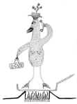

Lisa
Martinovic
Is
that chicken organic?
Excuse
me . . .
Is
that chicken organic?
That
one, there
When
that chicken was still kickiní
was
she fed wholesome, all-organic meal
free
of treacherous hormones and antibiotics?
Did
she get to roam the range
foraging
and frolicking through amber waves of organic
grain?
During
her stay at Rancho de Pollo
was
this hen provided with a firm futon
private
phone , yoga classes and her
pick
of the roosters?
Was
she sexually fulfilled?
Did
she lay Jumbo brown happy eggs like it says on the
carton?
I
mean, can you certify that this bird
right
here lead a full and rich life
up
until the day some thoughtful soul
whacked
off her head
bled
her dry and plucked her naked?
Did
she grow up in a nurturing, incest-free nuclear family
with
a multi-cultural education and her own web site
before
she was skinned, shrink-wrapped and shipped to
market?
Did
my little child of god have access to the panoply of 12-step programs
for
any recovery issues that might arise for one who was
born
to be broiled?
Please
assure me that she went through life without
suffering
irradiation or genetically engineered anything
See,
my body is sooooo sensitive
Iíve
got to make sure that whatever I consume
meets
the
highest standards of purity and nutritional excellence
If
I am what I eat and Iím
gonna eat meat
I
mean second-hand grains: predigested, bio-converted
grub
well,
then my conversion machineómy chickenó
had
better be fueled by organic grains that were
hand-harvested
under a full moon by vine-ripened virgins
Yes,
I need to know all the details of my happy henís diet
and lifestyle choices
Was
her aura cleansed of negative psychic energies
before
I sautÈed her in cold-pressed flax seed oil
with
a hint of fresh rosemary?
Was
a spiritual advisor of her choosing present
during
her final hours?
Were
last rites administered while Susan Sarandon held
a
candlelight prayer vigil outside the slaughterhouse?
Before
I speared her tender flesh with the tines of my fork
before
my teeth cut into her succulent thigh
for
godís sake tell me she was treated humanely!
I
care about these things
I
may not be a vegetarian
but
my chicken had damn well better be
|
 |
{kind=link}
{kind=link}